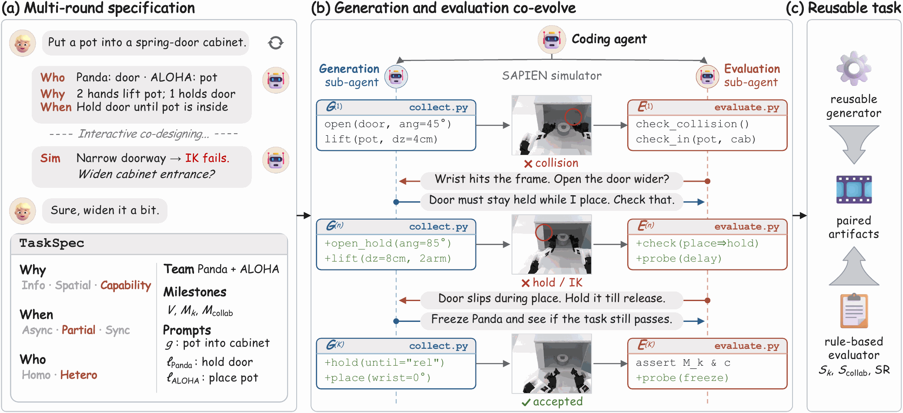
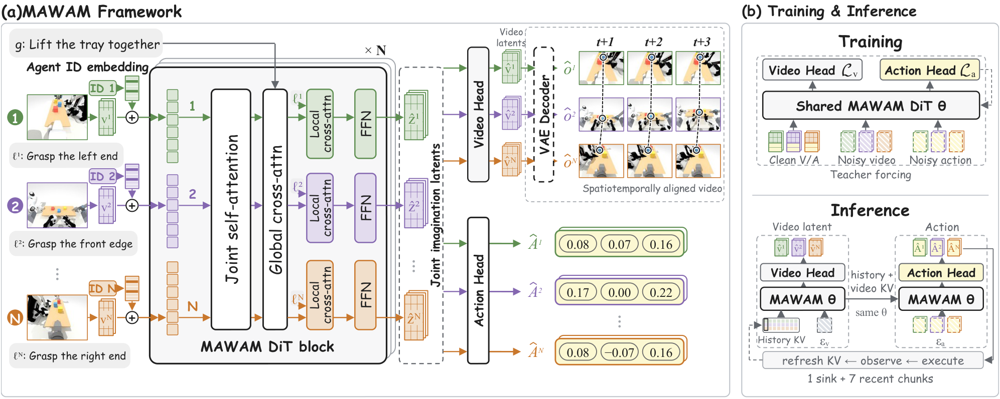

MAWAM
A multi-agent world action model for collaborative robot manipulation.
The idea
World action models imagine future views to decode actions. MAWAM makes the agent a first-class axis of that imagination.
Each robot imagines a private future and treats its partner as scenery.
Pooling cameras into one flat stream blurs which view and action belong to whom.
All robots share one causal sequence and one set of weights — imagine together, act per robot.
Task definition
A task is multi-agent-necessary when no single robot suffices while the team succeeds.
Information split across views. Workspaces beyond one robot’s reach. Contacts or payload exceeding a single body.
Asynchronous hand-offs, partially synchronous hold-and-act, and synchronous motion locked at every instant.
Homogeneous teams with interchangeable roles, and heterogeneous teams bridging distinct observation and action spaces.
MA-Task Harness
Generator and evaluator sub-agents co-evolve in simulation until demonstrations and rules converge.

MA-Bench
Spanning all temporal regimes, complementarity types, and embodiment pairings in closed loop.
Panda holds a spring-loaded door. ALOHA carries the pot inside with both arms.
How much of its own role each robot completes.
How many joint milestones the team satisfies inside its shared window.
Everything at once. High roles with low collaboration isolates coordination failure.
Method

Self-attention runs over the union of all robots. The robot index never gates an attention edge.
A global goal reaches every robot through gated cross-attention; each attends locally to its role.
A Fourier ID feature and a role vector tell each weight-shared stream which robot it is.
Single-agent control is axis length one. Learn each role first, then expand the axis.
Shared 3D imagination
Decoded 7.68 s future videos on Lift tray, keep blocks keep inter-robot 3D tray disagreement at 1.74 mm — 10.9× tighter than without joint imagination.
Results
Evaluated over 100 independent trajectory trials per simulation task and 20 closed-loop trials per real-robot task.
Cite
@article{tang2026mawam,
title = {MAWAM: Joint Imagination for Collaborative Robot Manipulation
with a Multi-Agent World Action Model},
author = {Rongze Tang and Chenyu Zhou and Jianjie Fang and Ziming Liu and
Zhaolu Wang and Ziyou Wang and Xvyuan Liu and Wei Wu and
Chen Gao and Yong Li and Zhibo Chen},
journal = {arXiv preprint},
year = {2026}
}